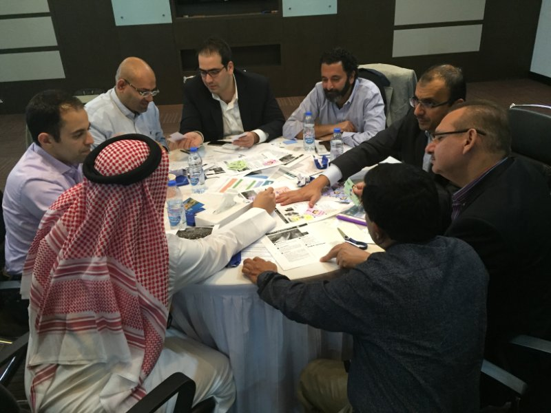

The Project Management Institute (PMI) 2015 LI Region 12 Meeting
The Project Management Institute – Lebanon Chapter participated in the Middle East Region Leadership meeting that was organized by the PMI Region 12 in Dubai. All Region 12 Chapters - Arabian Gulf Chapter, Khaleeji (UAE) Chapter, Lebanon Chapter, Jordan Chapter, Egypt Potential Chapter and Kingdom of Saudi Arabia Potential Chapter - attended the meeting.
“Membership Retention, Growth, Business planning, Building relationships and collaboration” were the main themes of the 2015 LI Region 12 Meeting.

PMI Lebanon was represented by Mrs. Claude Khalil, Mr. Hasan Jaffal, Mr. Walid Fenianos and Mr. Pierre Hervouet.